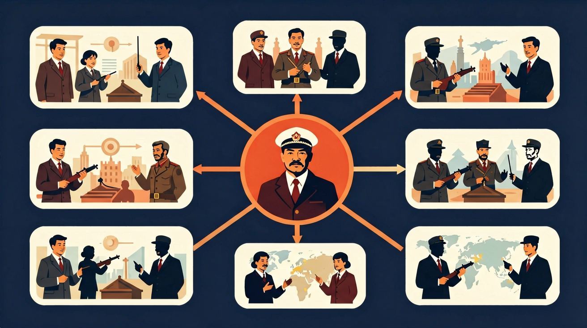

马克思主义根据人类社会生产力与生产关系基本矛盾的不同性质，把人类历史发展分为原始社会、奴隶社会、封建社会、资本主义社会和共产主义社会几种社会形态。

🎯 能说出马克思主义在俄国传播的3个历史条件
🎯 能判断十月革命与二月革命的根本性质差异
🎯 能分析列宁对马克思主义理论的创新点
❓ 为啥马克思一个德国人的理论能在俄国火起来？
❓ 十月革命和二月革命到底有啥区别？
❓ 苏联解体是不是说明马克思主义失败了？
学完这一课，这些问题你都能自信地回答。
马克思主义在俄国传播的关键历史条件是？
二月革命与十月革命的根本区别是？
马克思主义与俄国革命是高中历史的重要内容。马克思主义根据人类社会生产力与生产关系基本矛盾的不同性质，把人类历史发展分为原始社会、奴隶社会、封建社会、资本主义社会和共产主义社会几种社会形态。
认识五四爱国运动的历史意义，认识马克思主义在中国的传播与中国共产党成立对中国革命的深远影响。
点击时代按钮切换世界格局；结合本课主题观察空间分布。
把卡片拖到核心概念 / 方法技能 / 应用情境 / 常见误区。
拖完 4 项后自动判分。
马克思主义科学阐明资本主义社会矛盾与无产阶级历史使命。十月革命爆发于帝国主义链条薄弱环节，建立了第一个社会主义国家，开辟人类历史新纪元，并深刻影响中国等国的革命道路。
理论：剩余价值、阶级斗争、无产阶级专政等（教学层次适度）。俄国：战争危机、临时政府失败、布尔什维克策略。意义：社会主义从理论变为现实。
常见误区：常见误区是脱离一战与俄国国情抽象谈十月革命。
十月革命的最重大意义是？
你已经学过工业革命，具备继续探索的底座；在日常生活中，你也早就接触过与「马克思主义与俄国革命」相关的现象。
但当问题换了一个情境出现——需要你解释原因、做出判断或解决实际任务时，仅凭零散的旧知识就很容易卡住。
所以本课用一个贯穿的情境任务，带你把「马克思主义与俄国革命」拆成可操作的步骤：先看懂它，再动手试，最后用练习和迁移把它变成自己的能力。
从经济基础（农奴制残余）、阶级矛盾（工人与沙皇）、国际环境（一战）三要素拆解
列宁将马克思主义本土化为‘帝国主义薄弱环节突破论’
对比巴黎公社（自发）与十月革命（政党领导）的组织形态差异
观察革命海报中的锤子镰刀符号如何取代沙皇双头鹰
思考‘工农联盟’思想对当代中国乡村振兴的启示
复制提示词到 AI 学伴，生成「马克思主义与俄国革命」的时间轴或事件提纲；也可以上传你手绘的示意图，请 AI 学伴点评。
复制后可粘贴到 AI 学伴继续对话。
下列哪项最能体现马克思主义在俄国的本土化？
分析马克思主义理论在俄国革命中的具体实践及其特点
先独立作答，再点选项查看对错与错因。
列宁提出的"四月提纲"主要内容是什么？
布尔什维克党在1917年10月革命中主要依靠的力量是？
马克思主义在俄国实践中的最大特点是？
列宁提出的革命理论强调在____薄弱环节首先取得突破
答案：帝国主义链条
这是列宁对马克思主义的重要发展
1917年二月革命后，俄国出现了____和临时政府并存的局面
答案：苏维埃
这是俄国独特的政治现象
✅ 列宁提出‘社会主义可能在一国首先胜利’的创新理论
💡 混淆理论普遍性与实践特殊性
✅ 社会主义实践受多重因素影响，需区分理论与现实
💡 简单因果归因
口诀：经济基础定上层，列宁创新破坚冰
类比：像网购要先有手机（生产力）、快递（组织）、促销需求（矛盾）
（真题）列宁对马克思主义理论的突出创新是？
（迁移）若分析某国革命条件，最应优先考察？
（综合）最能体现马克思主义俄国化的是？
点击节点跳转到对应章节；可切换布局。